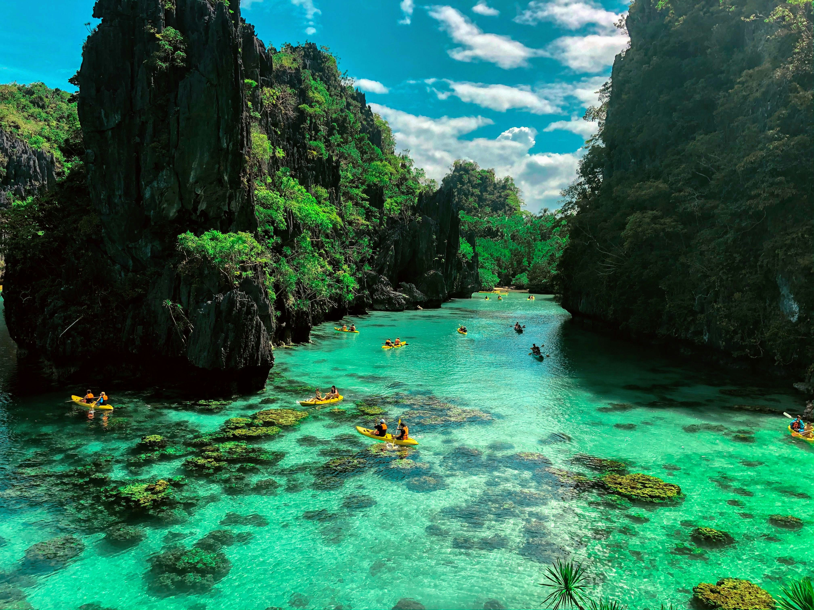
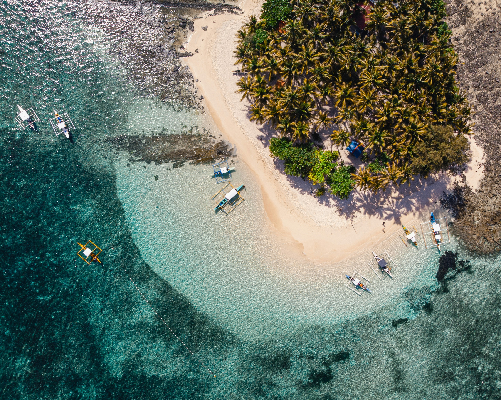
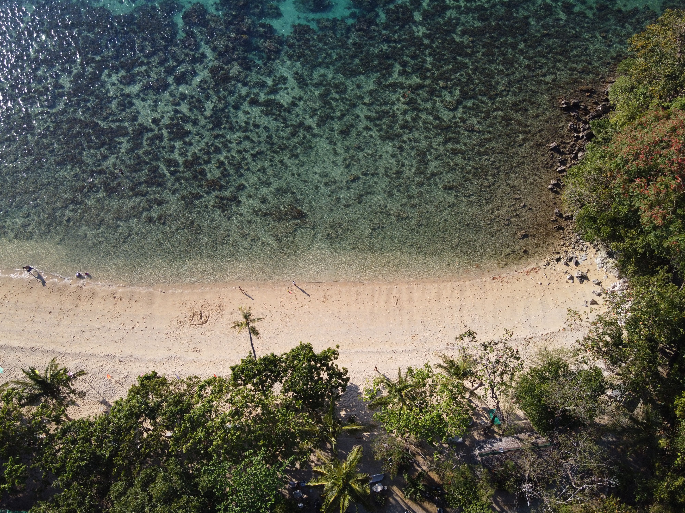

Discover five breathtaking destinations worth visiting.
Introduction
The Philippines is home to some of the most stunning natural wonders in Southeast Asia. From white sand beaches to volcanic islands, here are five spots every traveler should see.
El Nido, Palawan

Aerial view of turquoise waters and towering limestone cliffs in El Nido.
El Nido is a town in northern Palawan known for its limestone cliffs, hidden lagoons, and island-hopping tours. Visitors kayak through the Big Lagoon and Small Lagoon and relax on Nacpan Beach. Entalula Beach, reachable only by boat, was ranked second-best beach in the world on the 2025 World's 50 Best Beaches list.
Siargao

Overhead view of a curved white shoreline and shallow reef in Siargao.
Siargao is a teardrop-shaped island in the Philippines known as the country's surfing capital, thanks to the powerful waves at Cloud 9. Away from the surf, visitors can swim in Sugba Lagoon and go island hopping to Guyam, Daku, and Naked Islands.
Camiguin
High-angle view of lush green mountains and cloud-kissed ridges in Camiguin.
Camiguin is a small volcanic island in northern Mindanao that is still often overlooked by tourists. Within a compact area it offers black sand beaches, natural hot springs, waterfalls, and winding roads that circle the island beneath its volcanoes.
Bonbon Beach, Romblon

Top-down view of Bonbon Beach's sandbar cutting through clear water.
Bonbon Beach is a long stretch of pale sand in Romblon that cracked the top 50 on the World's 50 Best Beaches list. It sees far fewer visitors than Palawan's famous beaches, making it a calm choice for travelers who want space and quiet.
San Vicente, Palawan
Aerial perspective of the coastline and long beach stretching across San Vicente.
San Vicente, just north of El Nido is home to a 14-kilometer stretch of white sand often described as the longest in the Philippines. It draws far fewer crowds than El Nido, so visitors can enjoy the water in peace.
Contact Us
Have questions or want to plan your travel? Reach out to us below!